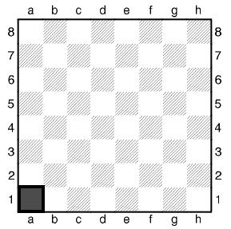

Урок первый. Знакомство с шахматами.
Ша́хматы — настольная логическая игра с шахматными фигурами на 64-клеточной доске, сочетающая в себе элементы искусства (в том числе в части шахматной композиции), науки и спорта.
В шахматы обычно играют два игрока (именуемые шахматистами) друг против друга. Также возможна игра одной группы шахматистов против другой или против одного игрока, такие партии зачастую именуются консультационными. Кроме того, существует практика сеансов одновременной игры, когда против одного сильного игрока играет несколько противников, каждый на отдельной доске.
Правила игры в основном сложились к XV веку; в современных официальных турнирах применяются правила Международной шахматной федерации, которыми регламентируются не только передвижение фигур, но и права судьи, правила поведения игроков и контроль времени. Игра, осуществляемая дистанционно, например, по переписке, по телефону или через Интернет, имеет особые правила. Существует множество вариантов шахмат, отличающихся от классических: с нестандартными правилами, фигурами, размерами доски и т. п. Соответствующий раздел шахматной композиции — сказочные шахматы. Некоторые аспекты шахматной игры изучаются в математике (например, классические «Задача о ходе коня» и «Задача о восьми ферзях»), в том числе при помощи компьютерного моделирования.
Перед вами шахматная доска. Это поле сражения, состоящее из белых и чёрных клеток. Всего на доске их 64 — 32 белых и 32 чёрных. По краям доски сверху и снизу буквы, а справа и слева цифры.
Шахматные фигуры
Шахматный Король – в каждом войске (шахматных наборах соперников) королей всего лишь по одному: чёрный и белый. На демонстрационной шахматной доске у короля вы увидите крест. В честь Шахматного Короля – Шаха игра и стала называться Шахматами.
Шахматный Ферзь – фигура ростом вышла чуть меньше короля. На демонстрационной шахматной доске у ферзя вы увидите красивую корону с пятью остроконечными зубцами. В начале шахматной партии ферзей каждого соперника по одному.
Шахматная Ладья на доске весьма напоминает крепостную неприступную башню. А во Франции и в других странах мира она так и называется – Тура (башня, крепость). Вид фигуры в конечном результате изменился, она стала похожа на башню, название же осталось прежним. Ладей у каждого игрока по две.
Шахматный Слон. А фигура на слона совсем и не похожа. Фигура, похожая на человечка, который и управлял этим могучим животным. Слонов у каждого игрока по два.
Шахматный Конь. Фигуру коня никогда ни с кем не перепутаешь. Фигура - это лишь лошадиная голова. Шахматных коней у противников по два.
Шахматная Пешка – маленький человечек в круглом шлеме. Пехота, пехотинец, пешком – вот почему эта шахматная фигура так называется. Шахматные пешки ходят только вперёд. Пешек в каждой армии больше всего – по восемь.